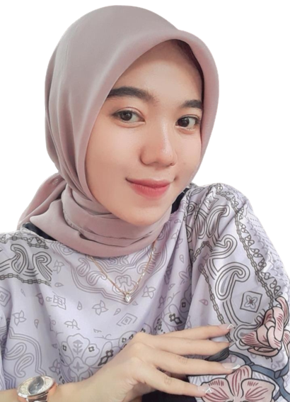

|  | ABOUT ME |
|---|---|
|
Hallo! Saya Adhiba, saya Mahasiswa semester 6 jurusan D3 Sistem Informasi Universitas Airlangga. Orang yang komunikatif, jujur, disiplin, dan suka belajar hal baru. Sangat tertarik dengan Desain UI/UX, System Analyst, Web Pengembangan, Graphic Design, Social Media Entrepreneur dan Pemasaran Digital. Saya menantang diri saya setiap hari dan tumbuh lebih banyak untuk masa depan yang lebih baik. |
|
BIODATA |
|
| Nama | Adhiba Alya Firdaus |
| Tempat/Tanggal Lahir | Surabaya, 07 Agustus 2002 |
| Alamat | Jalan Ketintang Barat 3/95, Surabaya |
| Agama | Islam |
| Jenis Kelamin | Perempuan |
| Kewarganegaraan | WNI |
| Pekerjaan | Mahasiswa |
| No. Telp | 085851039374 |
| firdhibalya@gmail.com | |
| Hobi | Desain, Olahraga, Membaca Novel |
SKILLS |
|
|
|
EDUCATION |
|
|
|
EXPERIENCE |
|
CONTENT CREATOR || Alphabet Management (Indonesia) Saya bergabung dengan Alphabet.management sebagai talent yang membuat content untuk endorsement. EDITOR VIDEO || Freelance (Indonesia) Saya telah melakukan lebih dari 15+ pengeditan video dan 10 di antaranya adalah animasi dengan rentang durasi 3-15 menit yang diselesaikan menggunakan Powtoon dan Canva. FRONT-END DEVELOPER || PDAM SURYA SEMBADA SURABAYA (Indonesia) Saya melakukan Praktek Kerja Industri yang menjadi tanggung jawab pembuatan Front end (redesign Web Portal PDAM Surya Sembada kota Surabaya) menggunakan HTML/CSS. STUDY INDEPENDENT PT. SINTESIS KOMUNIKASI Jakarta, (Indonesia) Saya mengerjakan dengan membuat tugas akhir berupa chatbot dengan bahasa pemrograman Python menggunakan penelitian dari Pedoman Skripsi FEB UNSOED. FULLSTACK DEVELOPER || PDAM SURYA SEMBADA SURABAYA (Indonesia) Saya membuat website Sistem Pengaduan kendala Operasional Internal (IT Support) PDAM Surya Sembada Kota Surabaya |
|
PROJECT EXPERIENCE |
|
2021 2022 - 2023 |
|
ORGANIZATIONAL EXPERIENCE |
|
Maret 2022 - Februari 2023 Staff Direktorat Jendral 2 Pengembangan Inovasi September 2020 - Januari 2023 Bendahara Bidang Perhubungan |
|
AWARDS |
|
Maret 2021 Meraih juara 2 dengan one point persepective | |